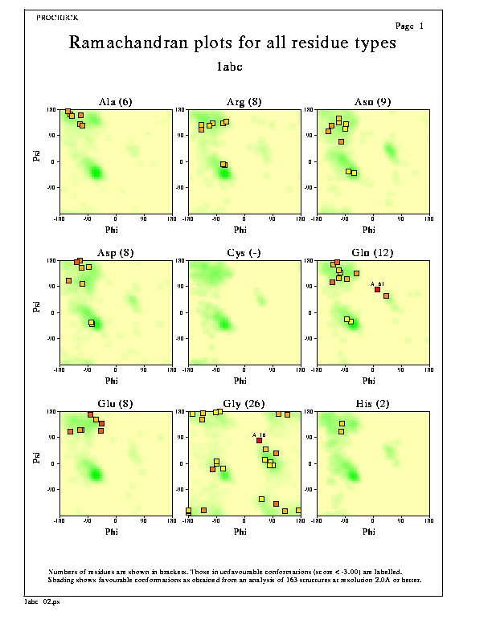

The plot shows separate Ramachandran plots for each of the 20 different amino acid types.
The darker the shaded area on each plot, the more favourable the region. The data on which the shading is based has come from a data set of 163 non-homologous, high-resolution protein chains chosen from structures solved by X-ray crystallography to a resolution of 2.0Å or better and an R-factor no greater than 20%.
The numbers in brackets, following each residue name, show the total number of data points on that graph. The red numbers above the data points are the reside-numbers of the residues in question (ie showing those residues lying in unfavourable regions of the plot).